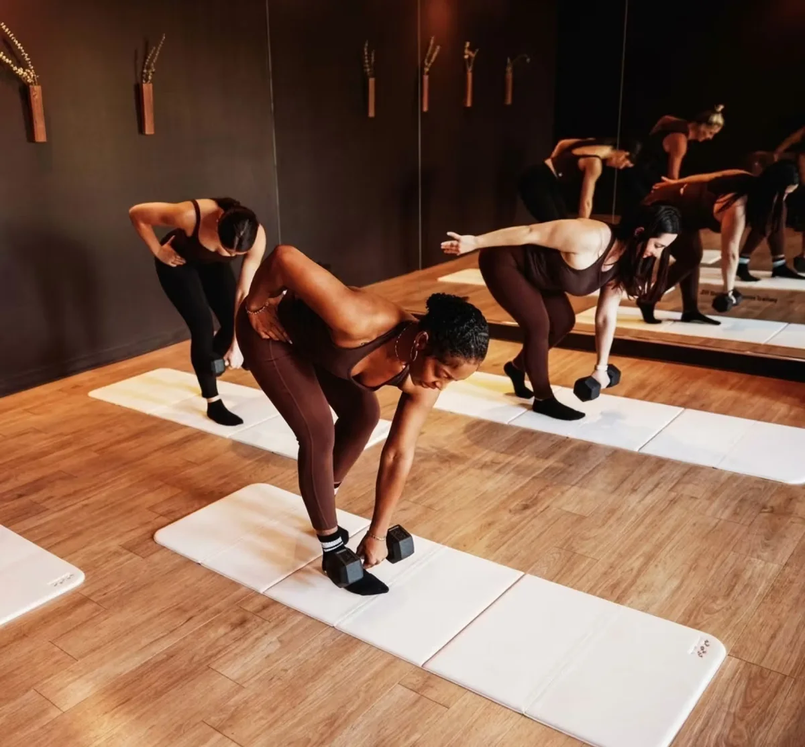

Pilates · Downtown Naperville
Marlissa Hamgeri
Owner & master Pilates instructor at Shyft Pilates.
Get to know the person helping lead a downtown Naperville Pilates community.

From instructor to studio owner.
Marlissa’s path at Shyft began as an instructor and continued as studio manager. According to the studio’s story, her family took over in 2025 after she had spent more than five years as part of the Shyft community.
Shyft’s team page identifies Marlissa as its owner and master Pilates instructor. The studio emphasizes small classes, individual guidance, and a supportive community.
Find her at Shyft Pilates.
39½ W Jefferson Ave, 2nd Floor
Naperville, IL 60540
Shyft offers small-group reformer and mat Pilates, plus private sessions. Check the live schedule for Marlissa’s current classes or contact the studio to ask about a private session with her.
Taken a class with Marlissa?
Share what you appreciate about her teaching on the REC App. Your experience can help someone else discover their next favorite instructor.
Prepared from Shyft’s official team page and studio information. Photo: Shyft Pilates. This is an independent REC feature. Confirm current instructors, offerings, prices, and availability directly with Shyft.